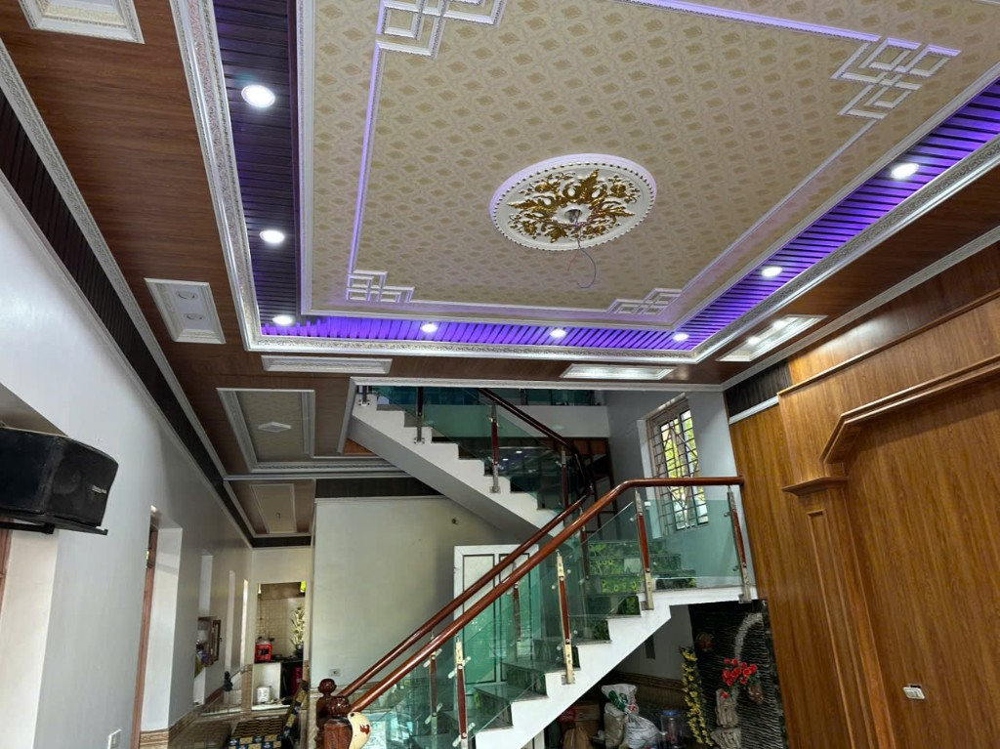
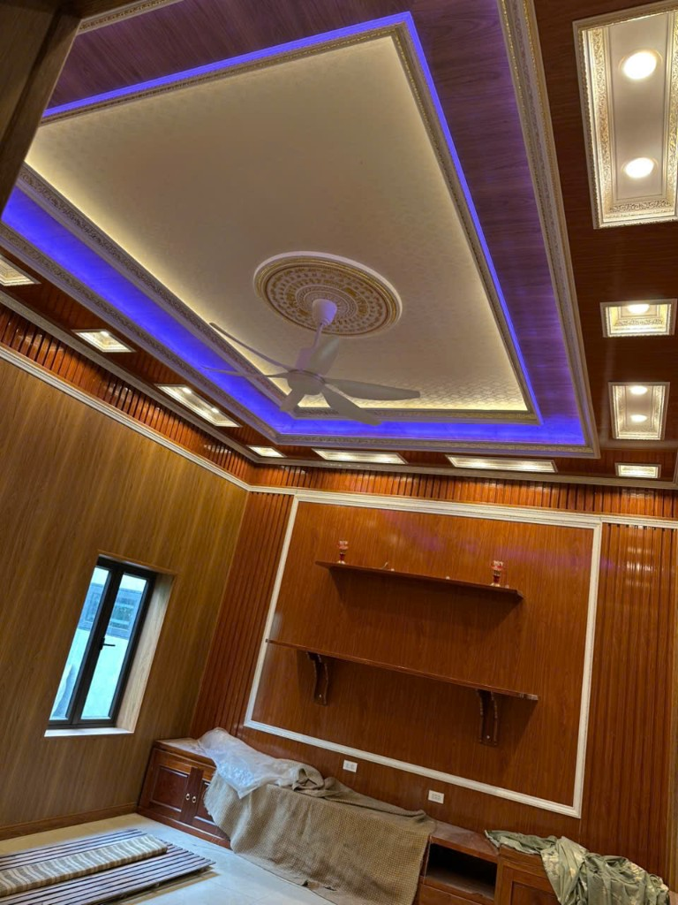
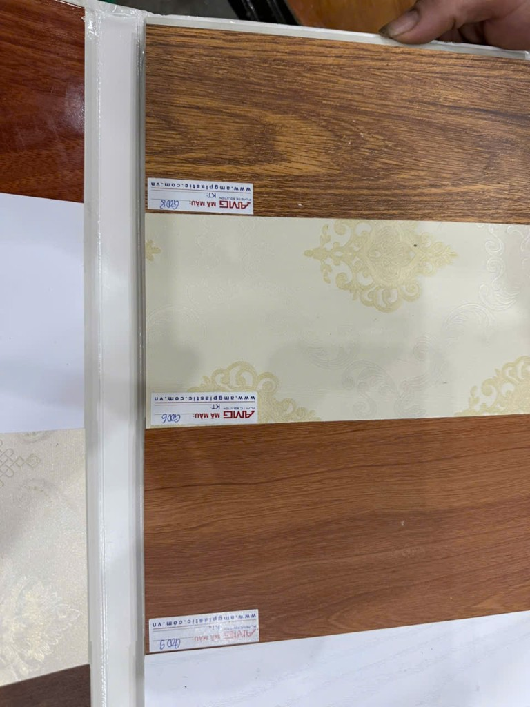
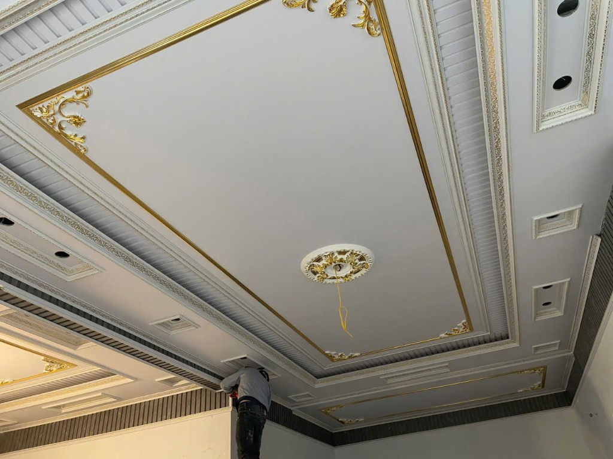

Hải Phòng · trần cấp nano vân gỗ
Nhìn lên,
nhà đã khác.
Trần không phải chỗ để che bê tông. Trần là nhịp của phòng: một đường chỉ, một tầng giật, một vầng đèn lúc nhà tắt bớt. Anh Vạn làm việc đó ở Hải Phòng.
Gọi anh Vạn · 0986 324 525
Nhìn lên
Có những căn nhà chỉ thực sự xong khi người ta ngẩng đầu.
Người làm
Anh Vạn nhận trần cấp, ốp tường nano và vách bàn thờ. Ảnh trong trang là nhà anh đã làm ở Hải Phòng: phòng đã ở được, và nhà tường còn xám mà trần đã xong trước.
Nano vân gỗ, phào chỉ, mâm, đèn hắt tím hoặc xanh, vách sen, Phúc Lộc Thọ, hoành phi. Nhà xây mới hay nhà ở rồi muốn làm lại trần, gọi anh. Anh tới đo, chốt nhịp trần trước khi ốp một tấm.
Hải PhòngAnh Vạn
0986 324 52501 — Trần cấp
Nhịp ở trên đầu
Giật cấp, phào, mâm, và một khe đèn chạy theo mép. Trần không phẳng thì phòng có chiều sâu.

02 — Ánh sáng
Đèn hắt đổi giọng phòng
Ban ngày trần là gỗ và chỉ. Tối đến, một dải LED tím hoặc xanh nằm trong khe giật cấp. Nhà không cần thêm đồ. Chỉ cần bật đúng khe sáng.
03 — Tường và lam
Tường mặc cùng một chất
Trần đẹp mà tường trần trụi thì nhịp gãy. Lam, phào, ốp đá, ốp gỗ đi cùng một lần làm.

Chất liệu
Gỗ, hoa, và một màu ấm
Tấm nano vân gỗ, tấm hoa kem, tấm gỗ sáng hơn. Cùng một khung trần, đổi tấm là đổi giọng phòng. Phào và mâm gắn sau, khi mặt tấm đã thẳng.
04 — Bàn thờ
Chỗ nhà dành cho bàn thờ
Vách CNC, sen, chữ, hoành phi. Phần này làm chậm hơn phần trần: đường cắt phải sạch, vì người trong nhà nhìn mỗi ngày.
05 — Cách một trần được dựng
Bốn bước, một mặt trần
Không có mẹo. Có thứ tự. Sai cao độ ở bước khung thì chỉ vàng không cứu được.

-
01
Chia nhịp Đo phòng, đặt cấp trần, chừa khe đèn và chỗ mâm. Phòng nhỏ thì một cấp. Phòng khách thì hai, có khi ba.
-
02
Khung xương Xương lên trước, đúng cao độ, mép thẳng. Trần đẹp hay không được quyết ở bước này.
-
03
Ốp tấm Nano vân gỗ, phào, chỉ, mâm. Mối nối giấu theo vân, không cắt ngang giữa phòng.
-
04
Ánh sáng LED trong khe, đèn điểm, rồi mới đến quạt. Bật thử buổi tối trước khi bàn giao.
Gọi anh Vạn
Nhìn lên.
Nhà đang tính làm trần, ốp tường hay vách bàn thờ, gọi một cuộc. Anh tới xem phòng rồi mới nói cách làm.
0986 324 525Trần cấp nano vân gỗ · ốp tường · vách bàn thờ · Hải Phòng.